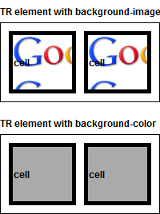

RC3006: 各浏览器中 table-row (TR) 元素的背景图片渲染位置存在差异
标准参考
根据 CSS2.1 规范中的描述，'background-image' 特性可以设定元素的背景图片，此特性可应用于 所有元素。
关于 背景 的详细信息，请参考 CSS2.1 规范 14.2 The background 中的内容。
问题描述
若为 TR 元素及设定了 'display:table-row' 的元素设置了背景图片 'background-image'，则在 IE6 IE7 IE8(Q) IE9(Q) Chrome Safari Opera(Q) 中，背景图片会分别作用于其内部的每一个单元格上。
而 IE8(S) IE9(S) Firefox Opera(S) 中虽然背景图片均作用到了 TR 元素及设定了 'display:table-row' 的元素之上，但其具体作用的盒子也存在差异。
造成的影响
此问题会导致表格中行的背景图片在不同浏览器中出现差异，可能导致依赖背景图片的设计在某些浏览器中异常。
受影响的浏览器
| 所有浏览器 |
|---|
问题分析
分析以下代码：tr_bg.html
<!DOCTYPE html>
<html>
<head>
<style>
* {
font: bold 12px/1 Arial;
}
body {
margin: 0;
}
table {
border: 1px solid black;
height: 100px;
width: 200px;
}
table tr.bgimage {
background-image: url(google.gif);
}
table tr.bgcolor {
background-color: #aaa;
}
table td {
border: 5px solid black;
}
</style>
</head>
<body>
<h1>TR element with background-image</h1>
<table cellspacing="10">
<tr class="bgimage">
<td>cell</td>
<td>cell</td>
</tr>
</table>
<br />
<h1>TR element with background-color</h1>
<table cellspacing="10">
<tr class="bgcolor">
<td>cell</td>
<td>cell</td>
</tr>
</table>
</body>
</html>
上面代码中，两组表格内的 TR 元素均设置了背景，其中第一组为背景图片 background-image: url(google.gif);，第二组为背景色 background-color: #aaa;。
这段代码在不同浏览器中运行结果如下：
| IE6 IE7 IE8(Q) IE9(Q) Chrome Safari Opera(Q) | IE8(S) IE9(S)1 | Firefox | Opera(S) |
|---|---|---|---|
|  |  |
 |
 |
可见，对于 TR 元素设置背景色，各浏览器没有任何差异；对于 TR 元素设置背景图片，
- 在 IE6 IE7 IE8(Q) IE9(Q) Chrome Safari Opera(Q) 中，TR 元素的背景图片并没有作用到 TR 元素之上，而是背景图片分别作用于其内部的每一个单元格上，图片在每一个单元格内重复；
- 在 IE8(S) IE9(S) 中，TR 元素的背景图片作用到了 TR 元素之上，并且作用的盒子为 padding-box；
- 在 Firefox 中，TR 元素的背景图片作用到了 TR 元素之上，并且作用的盒子为 border-box；
- 在 Opera(S) 中，TR 元素的背景图片作用到了 TR 元素之上，但作用的盒子比较特殊，无法判断。
注 1: IE10 Platform Preview 的结论与 IE9 相同。
以上代码测试了原生 'display:table-row' 的 TR 元素，下面针对设定了 'display:table-row' 的元素对于背景图片的渲染：
<div style="border: 1px solid black; border-spacing:10px; display: table; height: 100px; width: 200px;">
<div style="background-image: url(google.gif); display: table-row;">
<div style="border: 5px solid black; display: table-cell">cell</div>
<div style="border: 5px solid black; display: table-cell">cell</div>
</div>
</div>
这段代码在不同浏览器中运行结果如下：
| Chrome Safari Opera(Q) | IE8(S) IE9(S)1 | Firefox | Opera(S) |
|---|---|---|---|
 |
 |
可见， 'display:table-row' 的元素对于背景图片的渲染的结果与 TR 元素相符。
注 1: 由于 IE6 IE7 IE8(Q) 不支持 'display' 特性关于表格类的替代值，所以下面的测试不再考虑这些浏览器。
IE10 Platform Preview 的结论与 IE9 相同。
解决方案
TR 元素及 'display:table-row' 的元素作为表格中包裹一行单元格的容器，其渲染较其他块级元素更为特殊，而 CSS 规范中也没有明确说明此类元素的背景图片如何渲染。我们在利用背景图片布局时应避免设定到表格的行元素之上。可以利用为各单元格分别设定背景并通过合理的拼接达到类似的效果。
参见
知识库
相关问题
测试环境
| 操作系统版本: | Windows 7 Ultimate build 7600 |
|---|---|
| 浏览器版本: | IE6 IE7 IE8 IE9 Firefox 4.0.1 Chrome 11.0.696.71 Safari 5.0.5 Opera 11.11 |
| 测试页面: | tr_bg.html |
| 本文更新时间: | 2011-06-01 |
关键字
background background-image tile CSS3 背景 图片 background-origin border-box padding-box